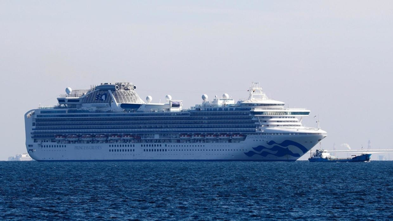

10日，多家媒体报道，停靠在日本横滨港的“钻石公主”号邮轮上新增65例新冠肺炎确诊病例，到目前为止该邮轮上已经有135人确诊感染。
“钻石公主”号邮轮由美国嘉年华邮轮集团日本分公司运营。船上共有来自56个国家和地区的2666名游客和1045名船员，约有一半乘客是日本人。
2月1日，曾乘坐该船的一名中国香港籍乘客被确诊为新冠肺炎病例。2月5日开始，船上3700多名乘客和工作人员就地接受隔离14天，检测结果为阳性的人陆续被送往当地医院救治，其他的人必须留在船上一直到2月19日。随着疫情扩大，日本厚生劳动省今日（2月11日）表示，感染风险较高者可获准下船。
美国《时代周刊》报道称，邮轮上的乘客得知有新冠肺炎患者出现后，陷入了可怕的寂静。一位乘客表示，“当时整个餐厅都停止了交谈，我们环顾四周，每个人都好像在评估当下的状况。”
文章还写到，乘客们被要求留在自己的房间里，每天只和工作人员交流三次。工作人员戴着口罩和手套送餐到乘客的房间门口。部分邮轮工作人员在走廊站岗，确保没有乘客在邮轮里随意走动。